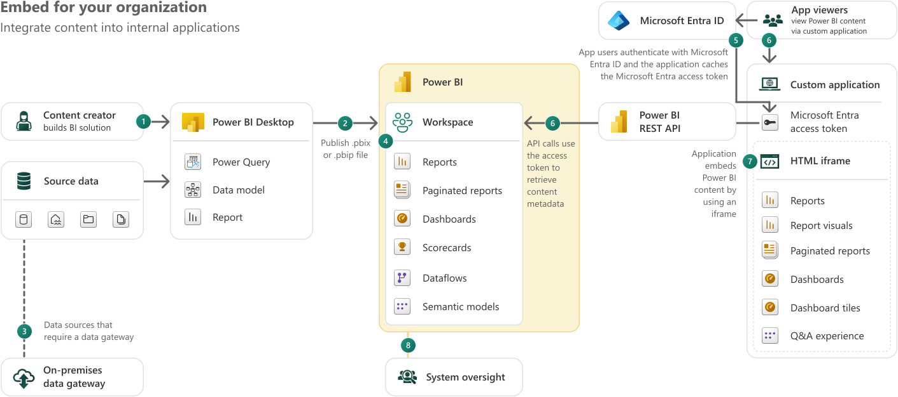
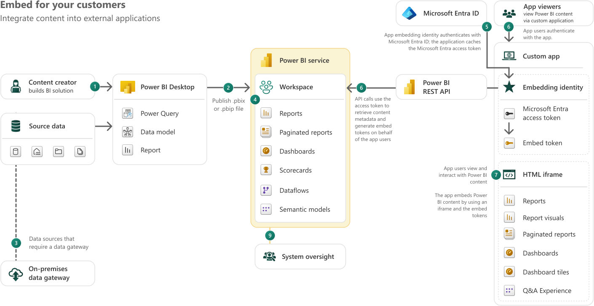

Full pricing breakdown for Power BI, Fabric and Power BI Embedded in 2026
Microsoft's BI ecosystem has a pricing problem. Ask three different consultants which product you should buy and you'll probably get three different answers. Each one technically correct for a slightly different set of assumptions.
The reason for the confusion: there isn't one singular product.
There's Power BI. That’s Microsoft’s BI tool and almost everybody has heard about it. Then there’s Fabric, the broader data platform that Power BI lives inside, which also brings data engineering, warehousing, real-time analytics and AI into one environment. And there's Power BI Embedded. That’s the licensing model built for organizations that want to deliver Power BI reports inside their own applications, without their audience ever touching a Microsoft product.
Each has its own pricing logic, its own ceiling and its own use case. Pick the wrong one and you're either overpaying for capacity you don't use or hitting limits you didn't see coming.
How does Power BI per user pricing work?
Power BI Pro costs $14/user/month. It's the baseline for anyone who wants to build a .pbix file in Power BI Desktop, publish a report to the Power BI service and share it with colleagues. Every single person who wants to view the report also needs a Pro license and because of that the price grows linearly with the number of users, even for users who only glance at a figure once a month.
That's a bit like booking a meeting room and having to purchase a ticket for every person who walks through the door, including the ones who only stopped by to check if the coffee was ready.
Premium Per User (PPU) steps it up at $24/user/month. For that extra cost, you get datasets up to 100 GB (versus Pro's 1 GB cap), up to 48 refreshes per day instead of 8, deployment pipelines, XMLA endpoints, AI features and paginated reports.
It's still on a per-user billing model, which means the cost still scales with every new viewer you add.
Both Pro and PPU are the natural fit for small to mid-sized teams where everyone is an active participant. They start showing their limits when you want to distribute reports to a larger audience, to external users or when you need more compute power.
Pro vs PPU
PPU ($24/user/mo): All Pro features + 100 GB datasets, 48 refreshes/day
Pro ($14/user/mo): Build + share within org, 1 GB datasets, 8 refreshes/day
Understanding the capacity model in Fabric
Microsoft Fabric calls their computer units F SKUs. Instead of a license per user per month, you buy a dedicated number of SKUs across your entire organization, similar to how cloud computing pricing works.
The pricing is hourly and billed by the second (with a one-minute minimum) through your Azure subscription. You can estimate your costs here.
F128+ - enterprise scale, prices double at each tier
The most important threshold in the entire Fabric pricing model is F64. At F64 and above, users who only need to view reports no longer require individual paid licenses.
Below F64, every report consumer still needs a Power BI Pro license, which means that for small capacities used purely for report distribution to a large audience, you end up paying for both the capacity and the per-user licenses.
A cool thing about F SKUs is that they can be paused. You can pause capacity at night, on weekends or whenever your workloads aren't running (and you stop paying immediately). Moreover, a 1-year reservation brings costs down by roughly 40% versus pay-as-you-go.
And critically: F SKUs aren't just Power BI hosting. They cover the entire Fabric stack: Data Factory pipelines, Spark notebooks, Data Warehouse, Lakehouse, Real-Time Intelligence, and many other features.
Key takeaway:
Below F64: capacity cost + Pro license for every viewer. Above F64: capacity cost only.
We are cognizant of the fact this might be a lot to take in, especially if you are new to the Microsoft ecosystem.
"Embed for your organization", sometimes referred to as user owns data, focuses on how developers can programmatically embed PBI content in a custom app for your org.
Here, the people viewing the embedded reports are internal users who already have permission and appropriate licenses. The app integrates Power BI content into an internal portal, but authentication still goes through Microsoft Entra ID.
Think of it as a "convenience" layer: you're bringing the reports into your own interface, but the licensing model underneath is unchanged.

Diagram showing the Power BI embed-for-your-organization flow: a content creator builds a report in Power BI Desktop, publishes it to a Power BI workspace, and internal app users authenticate via Microsoft Entra ID to view reports, dashboards, and paginated reports through an HTML iframe inside a custom application. Source: https://learn.microsoft.com
"Embed for your customers", the app owns data scenario, is what A SKUs are purpose-built for. Here, end users have no permission or appropriate licenses to access Power BI content in your org. The app itself authenticates with PBI using a service principal, generates embed tokens and serves the reports inside an iframe. Your customers only see the app interface. This is the model used by ISVs, customer-facing portals and any product where you're delivering analytics to external users.

Diagram showing the Power BI embed-for-your-customers flow: a content creator publishes reports to a Power BI workspace, the custom app authenticates using an embedding identity and Microsoft Entra access token, generates embed tokens, and serves Power BI reports, dashboards, and visuals to external app users through an HTML iframe, with no Power BI license required on the customer side.Source: https://learn.microsoft.com
Current approximate pricing (US East, pay-as-you-go, 24/7 operation):
A1 -1 v-core, 3 GB RAM, ~$735/month
A2 - 2 v-cores, 6 GB RAM, ~$1470/month
A3 - 4 v-cores, 12 GB RAM, ~$2940/month
A4 - 8 v-cores, 24 GB RAM, ~$5880/month
A SKUs can be paused when not in use, which is one of their most practical advantages. A development environment running only 40 hours a week instead of 730 cuts that bill by over 90%.
The distinction between the 2 embedding scenarios matters for licensing: "embed for your organization" still requires each viewer to have a Pro or PPU license, while "embed for your customers" doesn't - which is precisely why A SKUs (and F SKUs used for embedding) exist.
The key difference between A SKUs and F SKUs worth noting: A SKUs are exclusively for embedding - you can't use them to access reports through the Power BI service UI and they don't cover any other Fabric workloads. F SKUs, on the other hand, support embedding too, starting from F2 (the lowest F SKU), while also covering the full Fabric platform. Whether A SKUs will eventually be fully replaced by F SKUs as the preferred embedding capacity is an open question; Microsoft hasn't said anything official on the matter. But maybe it's worth keeping in mind when making a long-term infrastructure decision.
Key takeaway:
"Embed for your organization” still requires users to have a Pro or PPU license
"Embed for your customers” doesn’t require PBI licenses
Pricing & capability matrix:
Power BI Pro
Power BI PPU
MS Fabric (F SKUs)
PBI Embedded (A SKUs)
Pricing model
$14/user/ month
$24/user/ month
From ~$263/mo (F2) to ~$8,400/mo (F64) PAYG capacity
From ~$735/mo (A1) to ~$23,542/mo (A6) PAYG capacity
Build reports
✓
✓
✓ (Pro license needed)
✓ (Pro license needed)
View reports (internal)
✓
✓
✓ Free at F64+, Pro needed below F64
Via embedded app (no PBI license)
Share internally
✓ (recipient needs Pro)
✓
✓ Free at F64+
✓ (embed for your org scenario)
Share externally
Limited (guest = Pro)
Limited (guest = Pro)
✓ F64+ no viewer license
✓ No viewer license
Data refresh
8×/day
48×/day
48×/day+
48×/day+
Max dataset size
1 GB
100 GB
Scalable with SKU
Scalable with SKU
Data engineering (pipelines, notebooks)
✕
✕
✓ Full Fabric stack
✕ (PBI reports only)
Data warehouse / lakehouse
✕
✕
✓
✕
Real-time analytics
✕
✕
✓
✕
Embed into custom app
✕
✕
✓ (F2+)
✓ Purpose-built
Pause capacity
N/A
N/A
✓
✓
1-yr reservation discount
N/A
N/A
~40% off PAYG
~40% off PAYG
Power BI, Fabric or Embedded? Choosing the right option
Pricing tables are useful, but let’s be honest, scenarios are what actually help you decide. So let’s imagine 3 organizational profiles and what a Microsoft BI solution looks like for each.
Scenario no. 1: a SME that wants to understand what’s going on
Org profile:
20-30 employees, mostly internal users
Currently living in Excel spreadsheets passed around by email
One or two people who can build the reports; everyone else just needs to see them
No external sharing, no custom app, no data engineering
What fits: Power BI Pro.
For this profile, Power BI Pro is the obvious starting point. Everyone involved is internal, the team is small enough that per-user billing stays manageable and the data volumes are well within Pro's 1 GB dataset limit.
PS: If the team grows or the dataset complexity increases (larger models, more refreshes), PPU for all users becomes the natural next step before considering capacity-based options.
Scenario no. 2: The manufacturing company that wants a single source of truth
Org profile:
150-300 employees across production, operations, logistics, finance
Multiple data sources: ERP, MES, IoT sensors, supply chain feeds
Wants a unified data platform: ingest, transform, store and report from one place
Large datasets, frequent refreshes, complex data models
Mix of heavy analytical users and casual viewers
What fits: Microsoft Fabric (F SKUs).
This is exactly the scenario Fabric was built for. The company doesn't just need Power BI; they need pipelines to ingest data from their ERP and IoT systems, a warehouse or lakehouse to store and model it and reporting on top. Fabric does all of that within a single capacity.
For 200 users, the F64 threshold matters. Below F64, every viewer still needs a Pro license, which at 200 users would be an extra $2,800/month on top of the capacity cost. At F64, those viewer licenses disappear.
Just compare that to the alternative: Pro licenses for 200 users alone would be $2,800/month, without any data engineering, warehousing or advanced features. Add Azure Synapse for data processing, Data Factory for pipelines and Power BI Premium for reporting… and you're easily past $8,000/month for a patchwork of services that Fabric replaces with one.
Scenario no. 3: The marketing agency
Org profile:
Agency with multiple clients, each with their own data
Builds attribution models and delivers BI dashboards as part of their service offering
Clients access dashboards through a branded portal or embedded in a client-facing app
Clients do NOT have Microsoft accounts or Power BI licenses
Data must be isolated per client (row-level security per tenant)
What fits: Power BI Embedded (A SKUs) + F SKUs for data work
This scenario has two distinct layers: the data processing layer (building the attribution models, transforming raw ad/web data into the semantic models) and the distribution layer (delivering those dashboards to clients who have no Microsoft accounts).
For the distribution layer, Power BI Embedded with A SKUs is the right answer. The agency's application authenticates with Power BI, then the clients log in to the agency's portal (no license needed). Row-level security ensures each client only sees their own data.
For the data processing layer, the agency needs Pro licenses for the analysts who build the reports and maybe a small Fabric capacity (F2 or F4) for running the data pipelines, transformation logic and refreshing the semantic models. Using the Azure Pricing Calculator for the embedded capacity alongside a small Fabric SKU for data work gives a realistic picture.
Estimated cost breakdown (10 active clients, moderate complexity):
Cost item
Monthly
Annual
A2 embedded capacity (PAYG, business hours only ~12hrs/day)
~$735/month
~$8,820/year
F4 Fabric capacity for data pipelines (1-yr reserved)
~$312/month
~$3,744/year
Pro licenses for report builders (3 analysts × $14)
$42/month
$504/year
Total
~$1,089/month
~$13,068/year
The main point: no client-side licensing cost. You're not charging clients for Power BI access, you're not managing their Microsoft tenants and you're not explaining what a Pro license is. The cost is absorbed as part of the service.
Which Microsoft BI option is right for your org?
The right option depends on what your org really needs and which product matches your data complexity, audience profile and budget.
For a small team using simple reports, PBI Pro might be the best decision: cheap to start, easy to manage. As data complexity increases, PBI PPU feels like the normal upgrade: it’s Pro, but enhanced.
Things get more complex for larger organizations. At some point the per-user billing model stops making sense and that's when capacity starts looking attractive. The path might not be obvious: F SKUs below F64 still require Pro licenses for every viewer, which means a smaller Fabric capacity can end up costing more than expected once you factor in headcount.
For organizations that also want to deliver reports to an external audience through their own application, the answer is usually a combination: Fabric for the data platform side, Embedded (A SKUs) for the distribution side.
That combination gives you full flexibility on the data engineering layer, no viewer licensing costs and a customer experience that's entirely within your own product.
It's more moving parts, but for the right use case, it's also the most powerful setup Microsoft's BI stack has to offer. If your organization is considering this path, our Microsoft Fabric consulting team has built exactly this kind of architecture for clients across Europe and the US."
FAQs
Can I migrate from Power BI Premium (P SKUs) to Fabric (F SKUs)?
Yes, and Microsoft is actively pushing in this direction. P SKUs are being phased out in favor of F SKUs, which offer equivalent or greater compute at lower cost in most tiers. If you're currently on a P SKU, it's worth modeling an F SKU equivalent before your next renewal.
What happens to my Power BI reports if I move to Fabric?
Nothing breaks. Fabric is backward compatible with existing Power BI content. Your .pbix files, semantic models, and workspaces migrate without rebuilding from scratch. The transition is additive, not disruptive.
Is Power BI Embedded the same as embedding a report in an iframe?
Not exactly. You can embed a Power BI report in an iframe without A SKUs using the free embed option, but that requires the viewer to have a Microsoft account and appropriate license. A SKUs are what remove that requirement entirely, letting you serve reports to external users with no Microsoft accounts through your own application.
Prices are approximately in the central US region. Regional pricing, enterprise agreements and reservation discounts will affect actual costs.